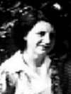
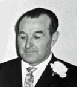

fiche familiale
*******************************************************************************
|   |
Marie-Anna Barriault décède à l'âge de 43 ans. dite Néna. Naissance le 2 oct 1909 à Laverlochère, cté Témiscamingue Décès le 7 jul 1953 à Rouyn-Noranda, cté Témiscamingue Sépulture au cimetière St-Michel de Rouyn-Noranda. Marraine de Damien Rivest. Père: Honoré Barriault Mère:Anna Bourget (sa famille) Mariage le 10 jul 1935 à St-Isidore de Laverlochère Conjoint: Ovide Jetté décède à l'âge de 67 ans. Naissance le 11 nov 1909 à St-Alphonse-de-Rodriguez, cté Joliette Décès le 13 mai 1977 à Gatineau Sépulture au cimetière Notre-Dame - (Jardins du Souvenir) de Gatineau. En 1940 il fût entrepreneur de chantier à Duparquet sur la coupe de bois dans les cantons Monbray et Duprat, appartenant à MM. J.E. Dufour et Léonidas Côté. Père: Eugène Jetté Mère: Ida Boisjoly (sa famille) |
Enfant 1 Gisèle Jetté
Naissance: 27 mai 1937 à Rouyn-Noranda, cté Témiscamingue
Mariage: 6 août 1960 à Immaculée-Conception de Rouyn-Noranda
Conjoint: Bernard Charbonneau
n. 26 août 1936
Père: Joseph Charbonneau
Mère: Marie Trudel
-------------------------------------------------------------------------------
 |
Enfant 2 Gilles Jetté décède à l'âge de 78 ans. Naissance: 16 juin 1941 à Rouyn-Noranda, cté Témiscamingue Décès le 19 octobre 2019 à Gatineau Mariage: 12 mai 1962 à Immaculée-Conception de Rouyn-Noranda Conjointe: Rachel Paiement n. 27 mai 1937 Père: Éliodore Paiement Mère: Lucie Coutu |
Enfant 2 Serge Jetté
-------------------------------------------------------------------------------
 |
Enfant 3 Lucien Jetté décède à l'âge de 56 ans Naissance: 22 mars 1943 à Rouyn-Noranda, cté Témiscamingue Décès: 30 juillet 1999 à Val-D'Or, cté Abitibi Sépulture: au cimetière St-Michel de Rouyn-Noranda Mariage: 30 juin 1971 à Sacré-Coeur de Hull 1ère conjointe: Louise French Père: Omer French Mère: Marie-Paule Allen Enfant 1 Annik Jetté Conjoint: Steeve Harbour 2ème conjointe: Jacqueline Lavoie Père: Paul-Émile Lavoie Mère: Yolande St-Arnault Enfant 1 Alain Lavoie |
Début de la page